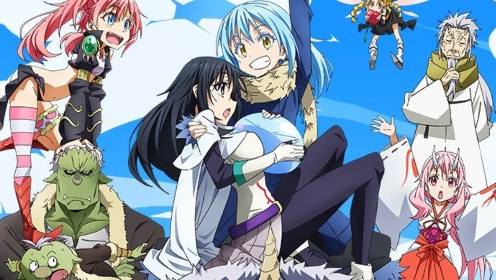
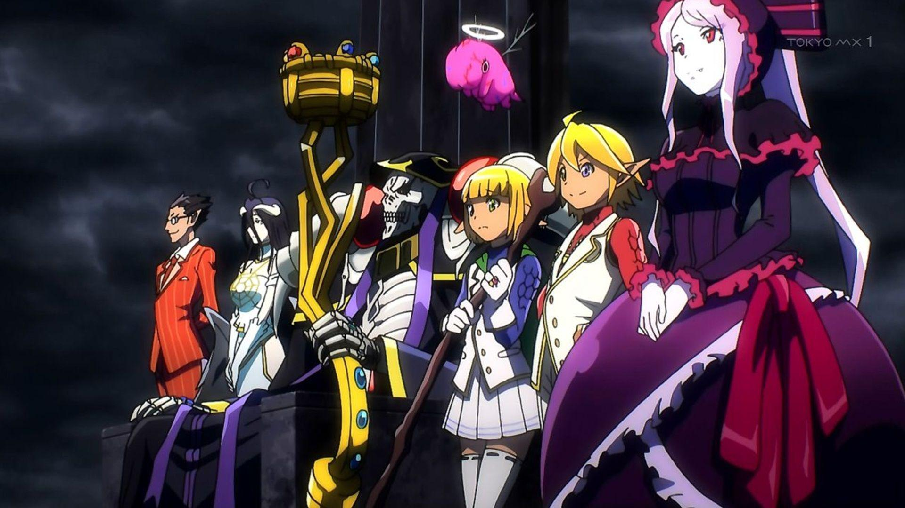
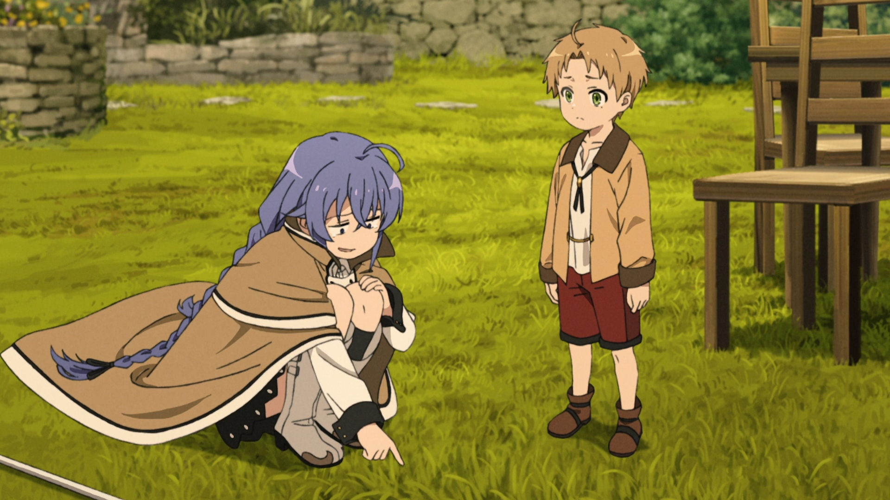
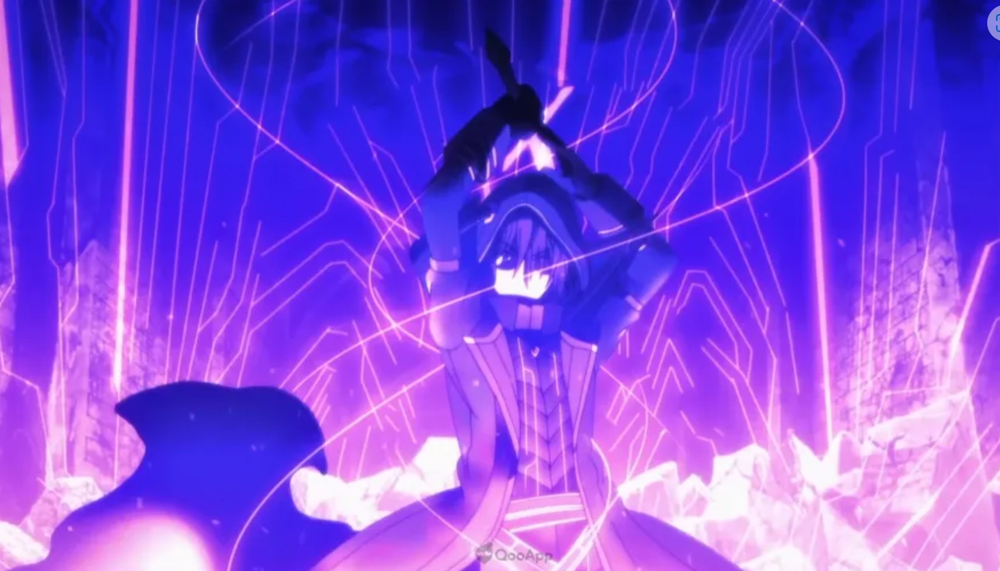
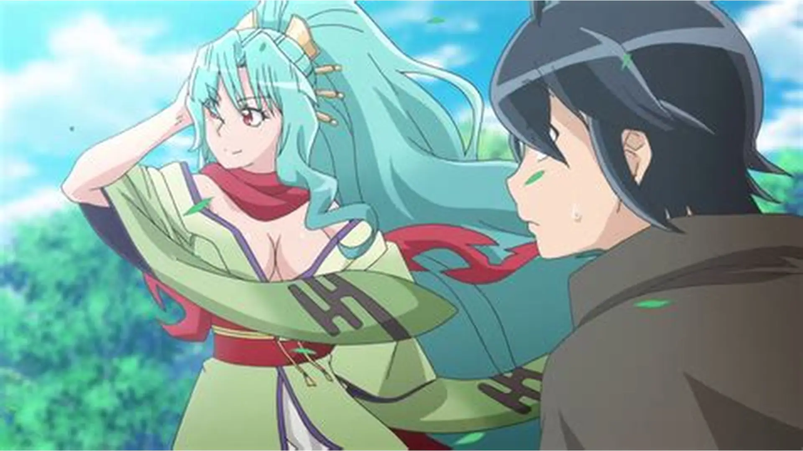
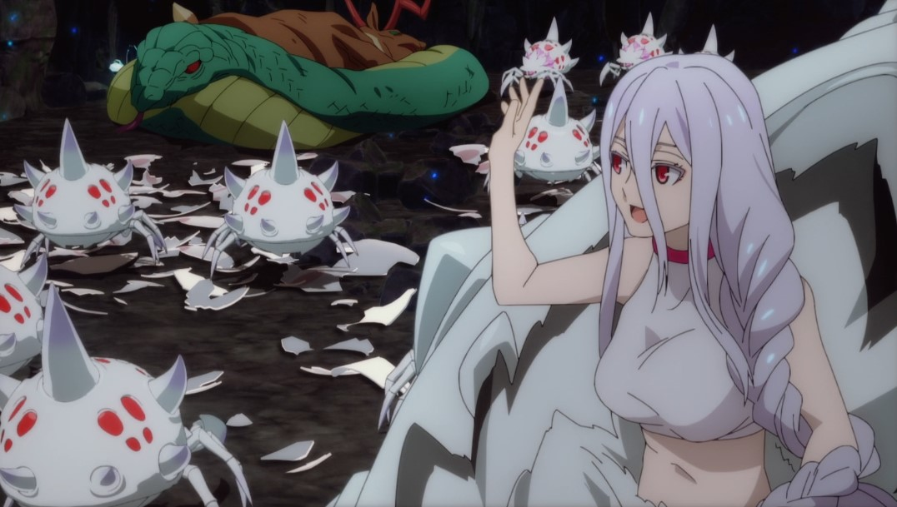
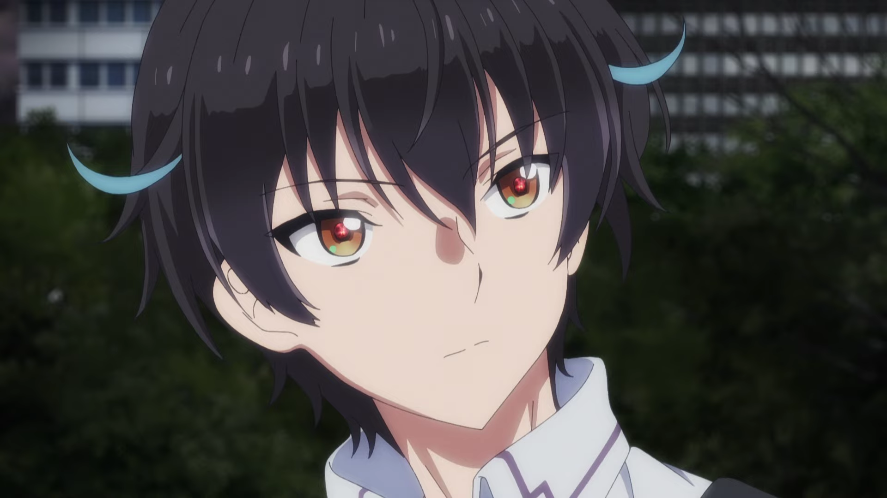
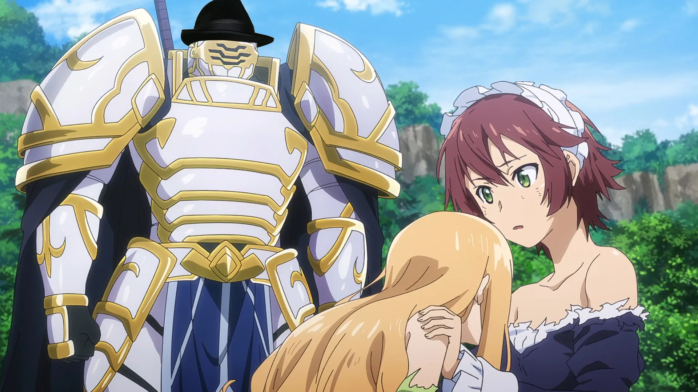
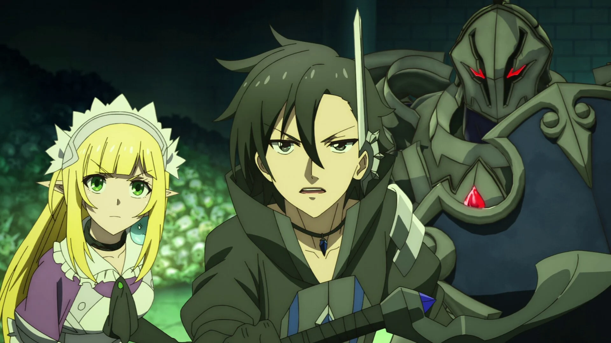
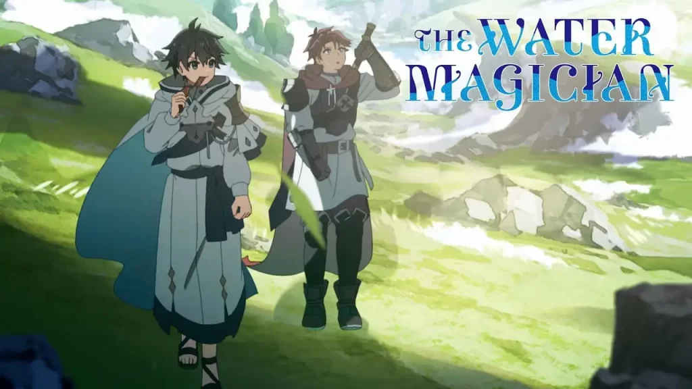

SMASH Senpai
Top 10 Isekai Anime With Overpowered Main Characters Who Break the World (2026 Edition)
Isekai anime has one irresistible fantasy — starting over in another world with power so overwhelming that the rules no longer apply.
These stories aren’t about fair fights or slow progression. They’re about characters who enter new worlds and immediately shatter balance, humiliate gods, and rewrite what strength even means.
Whether it’s broken magic systems, absurd cheat abilities, or intelligence that outclasses entire kingdoms, these protagonists don’t just survive — they dominate.
The appeal of overpowered isekai isn’t tension. It’s inevitability. Watching the world bend, enemies panic, and authority crumble the moment the main character gets serious.
These are the Top 10 Isekai Anime with overpowered main characters who completely break their worlds — delivering pure power fantasy, unapologetic dominance, and unforgettable moments of absolute control.
Sponsored
#1 That Time I Got Reincarnated as a Slime (Tensura)
This anime is the gold standard for overpowered isekai fantasy. From the moment Rimuru is reborn, the rules of the world stop applying in any meaningful way. What starts as a harmless slime quickly evolves into a being capable of rivaling gods.
Rimuru’s power isn’t just raw strength. It’s adaptability, intelligence, and the terrifying ability to absorb and replicate anything he encounters. Every enemy, every challenge, only makes him stronger. Growth is exponential, and the world never catches up.
What makes this power fantasy satisfying is control. Rimuru doesn’t dominate out of cruelty. He builds nations, creates alliances, and reshapes political systems simply by existing. His presence alone destabilizes centuries of balance.
Conflicts rarely revolve around whether Rimuru can win. The tension comes from how much of himself he’s willing to unleash. When restraint fails, the consequences are absolute.
This is an isekai where overpowered doesn’t mean shallow. It’s about watching a world bend and reorganize itself around a force that was never meant to exist.
- Episode count: 48+
- Genre: Isekai, Fantasy, Action
- Known for: Extreme power scaling
- Core theme: Absolute evolution

play anime smash or pass here (not sponsored)
SMASH SENPAI – Smash or Pass#2 Overlord
Overlord flips the power fantasy into something far darker. Ainz Ooal Gown isn’t trying to become strong — he already is. From episode one, he stands at the absolute peak of magical and military power.
What separates Ainz from other overpowered protagonists is intent. He doesn’t seek justice or heroic recognition. He seeks control, understanding, and ultimately domination. Entire nations are reduced to experiments in strategy.
The anime thrives on imbalance. Enemies prepare elaborate plans, sacrifice armies, and wager everything — only to realize they were never players in the game. They were pieces.
Ainz’s power is overwhelming, but it’s paired with paranoia. His fear of failure pushes him to become even more ruthless. Every victory tightens his grip on the world.
Overlord isn’t about hope. It’s about inevitability. Watching civilizations crumble not from chaos, but from calculated supremacy. An isekai where the villain wins — and keeps winning.
- Episode count: 52+
- Genre: Isekai, Dark Fantasy, Action
- Known for: Villain protagonist
- Core theme: Absolute domination
Sponsored
#3 Mushoku Tensei: Jobless Reincarnation
Mushoku Tensei approaches overpowered storytelling with patience. Rudeus isn’t broken from birth, but his potential eclipses everyone around him. What makes him dangerous is time.
Given a second life, Rudeus trains relentlessly. Magic becomes instinct. Talent becomes mastery. By the time the world realizes what he is, it’s already too late.
Unlike flashier power fantasies, this anime focuses on foundation. Systems matter. Experience matters. Power feels earned — which makes its eventual scale far more terrifying.
Rudeus doesn’t just overpower enemies. He outgrows eras. His presence influences politics, cultures, and entire generations. Strength here isn’t loud — it’s inevitable.
Mushoku Tensei proves that overpowered doesn’t mean instant. Sometimes the most broken force is the one allowed to grow unchecked inside a living world.
- Episode count: 48+
- Genre: Isekai, Fantasy, Drama
- Known for: Deep worldbuilding
- Core theme: Power through growth
#4 The Eminence in Shadow
This anime takes the concept of an overpowered isekai protagonist and flips it into something strangely self-aware. The main character doesn’t want recognition, praise, or even dominance. He wants to be the power lurking in the shadows — unseen, unacknowledged, and terrifying when revealed.
What makes his strength interesting isn’t just how overwhelming it is, but how casually he treats it. Battles that would be final arcs in other anime are resolved here as background events. He never struggles for survival. The world struggles to understand him.
The story thrives on dramatic irony. The protagonist believes he’s role-playing a fantasy. Everyone else believes he is a godlike strategist dismantling secret cults and rewriting history. That gap between perception creates constant tension — and absurd comedy.
Unlike traditional power fantasies, this series doesn’t chase validation. Strength exists for its own sake. There is no moral monologue, no heroic speech, no desire to be seen as righteous. Power is simply exercised with absolute confidence.
This is an isekai where the protagonist already won before the story began. The appeal isn’t whether he’ll survive, but how the world reacts when it accidentally steps into his shadow.
- Episode count: 20+
- Genre: Isekai, Action, Comedy, Fantasy
- Known for: Secretly overpowered protagonist
- Core theme: Power without recognition
Sponsored
#5 Tsukimichi: Moonlit Fantasy
Tsukimichi begins with rejection. The goddess who summons the protagonist immediately discards him, judging him unworthy of being a hero. That moment defines the entire series — not as a tragedy, but as liberation.
Stripped of divine favor, the protagonist is left to survive on his own. What the goddess fails to realize is that his strength doesn’t depend on blessings. Magic flows unnaturally through him. His physical ability far exceeds the world’s limits. He simply had no reason to use it before.
Unlike many OP isekai leads, he doesn’t immediately dominate society. Instead, he builds a parallel existence. Monsters become allies. Exiles become citizens. A forgotten wasteland becomes a thriving domain under his quiet leadership.
The power fantasy here is slow and deliberate. Strength isn’t shown through constant battles, but through scale. Cities rise. Economies shift. Entire races reorganize around his presence.
Tsukimichi works because it replaces hero worship with self-determination. The protagonist doesn’t need approval from gods or humans. He creates value where he stands. In a genre obsessed with destiny, this story chooses autonomy.
- Episode count: 12+
- Genre: Isekai, Fantasy, Adventure
- Known for: Rejected hero becomes dominant force
- Core theme: Power through independence
#6 So I'm a Spider, So What?
This isekai immediately stands out by stripping away comfort. The protagonist isn’t reborn as a hero, a noble, or even a human. She awakens as a weak spider monster at the very bottom of a brutal dungeon ecosystem.
Survival is not optional. Every encounter is a potential death sentence. Progress is earned through intelligence, adaptation, and relentless persistence. Strength doesn’t arrive magically — it is constructed, skill by skill, mistake by mistake.
What makes her overpowered is not raw ability, but optimization. She studies the system, exploits mechanics, and turns disadvantages into weapons. By the time the world notices her, she has already surpassed most conventional heroes.
The story balances internal monologue with world-scale consequences. While she struggles alone, political and religious conflicts unfold elsewhere — many of them unknowingly influenced by her growth. Power here ripples outward long before it is recognized.
This anime redefines what an OP protagonist can be. Not chosen. Not praised. Not guided. Just relentless evolution. It proves that power fantasies don’t need comfort — they need consistency.
- Episode count: 24
- Genre: Isekai, Fantasy, Survival
- Known for: Non-human OP protagonist
- Core theme: Growth through adversity
Sponsored
#7 Instant Death Ability Is So Overpowered
This series removes the illusion of struggle entirely. The protagonist doesn’t grow stronger, unlock hidden potential, or discover his limits. He enters the world already possessing the ultimate authority — the ability to end anything, instantly, without resistance.
What separates this anime from typical OP isekai is how casually that power exists. There are no flashy techniques, no energy clashes, no drawn-out battles. Threats are erased before they can escalate. The tension doesn’t come from survival, but from misunderstanding.
The world operates on familiar fantasy logic — rankings, heroes, demon lords, and divine beings. The protagonist simply does not participate in those rules. No matter the scale, no matter the status, everything is equally fragile.
The humor is dry and almost unsettling. Characters boast, monologue, and declare dominance — only to disappear mid-sentence. The anime uses this repetition to critique power hierarchies themselves.
This is an isekai where the outcome is never in doubt. Instead of asking who will win, the story asks how a world built on conflict reacts to absolute finality. It’s absurd, blunt, and intentionally unbalanced.
- Episode count: 12
- Genre: Isekai, Comedy, Fantasy
- Known for: Absolute, uncontestable power
- Core theme: The collapse of power systems
#8 Skeleton Knight in Another World
At first glance, this anime looks like a classic fantasy setup. A knight in heavy armor, powerful skills, and a medieval world. The twist arrives quickly — beneath the armor is an undead skeleton, trapped in a body that cannot exist openly.
The protagonist’s power is undeniable. High-tier magic, overwhelming combat ability, and near-invulnerability make most encounters trivial. Yet the story refuses to turn him into a conqueror. Instead, restraint defines his journey.
Unlike many OP protagonists, he actively avoids attention. His strength is used selectively — to protect villages, rescue the enslaved, and dismantle cruelty without seeking recognition. Power here is treated as responsibility, not entitlement.
The contrast between appearance and intention drives the narrative. Feared as a monster, he behaves more humanely than most nobles and knights. The armor becomes both shield and prison, hiding his identity while allowing him to act.
This isekai succeeds by slowing down. It blends action with moral reflection, reminding viewers that overwhelming strength does not require domination. Sometimes, the most powerful choice is remaining unseen.
- Episode count: 12
- Genre: Isekai, Action, Fantasy
- Known for: OP undead knight protagonist
- Core theme: Power guided by restraint
#9 Black Summoner
Black Summoner presents an OP protagonist who actively seeks conflict. Reborn with powerful summoning abilities, he sacrifices memories in exchange for raw potential. Strength isn’t an accident — it is a deliberate choice.
What makes him dangerous isn’t just his power, but his enthusiasm. Battles are not obstacles. They are entertainment. Strong enemies are not threats — they are opportunities to test limits and refine tactics.
The summoning system allows flexibility and scale. Allies range from spirits to legendary beings, each reinforcing his dominance. Yet the anime avoids making combat mindless. Strategy, positioning, and preparation still matter.
Unlike morally rigid heroes, the protagonist operates on personal logic. He helps when it suits him, fights when it excites him, and grows stronger through constant engagement. This creates a tone that is unapologetically aggressive.
Black Summoner is an isekai for viewers who enjoy the thrill of escalation. There is no hesitation, no false humility. Power is embraced, cultivated, and displayed openly — exactly as intended.
- Episode count: 12
- Genre: Isekai, Action, Fantasy
- Known for: Battle-hungry OP summoner
- Core theme: Strength as personal fulfillment
#10 The Water Magician
This isekai approaches overpowered magic through patience. The protagonist is reborn with affinity for water magic — a skill often dismissed as defensive or secondary. Instead of chasing flash, he studies control, efficiency, and precision.
His strength develops through understanding systems. Water becomes pressure, temperature, flow, and manipulation. What others see as a simple element, he treats as a foundation for limitless applications.
The power fantasy here is quiet. He doesn’t dominate cities or announce his abilities. He adapts. Survival, preparation, and incremental growth define his journey. Over time, the gap between him and the world widens naturally.
The anime emphasizes stability over spectacle. Conflicts are resolved efficiently. Mistakes are minimized. Victory comes from foresight, not desperation.
Mizu Zokusei no Mahoutsukai appeals to viewers who enjoy logical progression. It proves that an OP protagonist doesn’t need chaos. Sometimes, absolute control is the most overwhelming force of all.
- Episode count: 12
- Genre: Isekai, Fantasy, Magic
- Known for: Tactical water magic mastery
- Core theme: Power through precision
Play Smash or Pass on SMASH Senpai.
 PLAY SMASH OR PASS
PLAY SMASH OR PASS